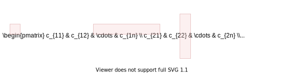
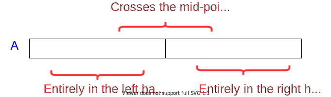

Download DOC, SLIDE, PPTX
Matrix Multiplication
Traditional
Recursive
Strassen
Quicksort
Hoare Partitioning
Lomuto Partitioning
Recursive Sorting
Quicksort Analysis
Randomized Quicksort
Randomized Selection
Medians
[c11c12…c1nc21c22…c2n⋮⋮⋮⋱cn1cn2…cnn]=[a11a12…a1na21a22…a2n⋮⋮⋮⋱an1an2…ann]⋅[b11b12…b1nb21b22…b2n⋮⋮⋮⋱bn1an2…bnn]\begin{bmatrix} c_{11} & c_{12} & \dots & c_{1n} \\ c_{21} & c_{22} & \dots & c_{2n} \\ \vdots & \vdots & \vdots & \ddots \\ c_{n1} & c_{n2} & \dots & c_{nn} \\ \end{bmatrix} = \begin{bmatrix} a_{11} & a_{12} & \dots & a_{1n} \\ a_{21} & a_{22} & \dots & a_{2n} \\ \vdots & \vdots & \vdots & \ddots \\ a_{n1} & a_{n2} & \dots & a_{nn} \\ \end{bmatrix} \cdot \begin{bmatrix} b_{11} & b_{12} & \dots & b_{1n} \\ b_{21} & b_{22} & \dots & b_{2n} \\ \vdots & \vdots & \vdots & \ddots \\ b_{n1} & a_{n2} & \dots & b_{nn} \\ \end{bmatrix} ⎣⎡c11c21⋮cn1c12c22⋮cn2……⋮…c1nc2n⋱cnn⎦⎤=⎣⎡a11a21⋮an1a12a22⋮an2……⋮…a1na2n⋱ann⎦⎤⋅⎣⎡b11b21⋮bn1b12b22⋮an2……⋮…b1nb2n⋱bnn⎦⎤

Running Time: Θ(n3)\Theta(n^3)Θ(n3)
for i=1 to n do for j=1 to n do C[i,j] = 0 for k=1 to n do C[i,j] = C[i,j] + A[i,k] + B[k,j] endfor endfor endfor
IDEA: Divide the nxnnxnnxn matrix into 2x22x22x2 matrix of (n/2)x(n/2)(n/2)x(n/2)(n/2)x(n/2) submatrices.
[c11c12c21c22]=[a11a12a21a22]⋅[b11b12b21b22]\begin{bmatrix} c_{11} & c_{12} \\ c_{21} & c_{22} \end{bmatrix} = \begin{bmatrix} a_{11} & a_{12} \\ a_{21} & a_{22} \end{bmatrix} \cdot \begin{bmatrix} b_{11} & b_{12} \\ b_{21} & b_{22} \end{bmatrix} [c11c21c12c22]=[a11a21a12a22]⋅[b11b21b12b22]
8 mults and 4 adds of (n/2)*(n/2) submatrices={c11=a11b11+a12b21c21=a21b11+a22b21c12=a11b12+a12b22c22=a21b12+a22b22\text{8 mults and 4 adds of (n/2)*(n/2) submatrices}= \begin{cases} c_{11}=a_{11}b_{11}+a_{12}b_{21} \\ c_{21}=a_{21}b_{11}+a_{22}b_{21} \\ c_{12}=a_{11}b_{12}+a_{12}b_{22} \\ c_{22}=a_{21}b_{12}+a_{22}b_{22} \end{cases} 8 mults and 4 adds of (n/2)*(n/2) submatrices=⎩⎨⎧c11=a11b11+a12b21c21=a21b11+a22b21c12=a11b12+a12b22c22=a21b12+a22b22
MATRIX-MULTIPLY(A, B) // Assuming that both A and B are nxn matrices if n == 1 then return A * B else //partition A, B, and C as shown before C[1,1] = MATRIX-MULTIPLY (A[1,1], B[1,1]) + MATRIX-MULTIPLY (A[1,2], B[2,1]); C[1,2] = MATRIX-MULTIPLY (A[1,1], B[1,2]) + MATRIX-MULTIPLY (A[1,2], B[2,2]); C[2,1] = MATRIX-MULTIPLY (A[2,1], B[1,1]) + MATRIX-MULTIPLY (A[2,2], B[2,1]); C[2,2] = MATRIX-MULTIPLY (A[2,1], B[1,2]) + MATRIX-MULTIPLY (A[2,2], B[2,2]); endif return C
T(n)=8T(n/2)+Θ(n2)T(n) = 8T(n/2) + \Theta(n^2)T(n)=8T(n/2)+Θ(n2)
Case 1: nlogbaf(n)=Ω(nε)⟹T(n)=Θ(nlogba)\frac{n^{log_b^a}}{f(n)}=\Omega(n^{\varepsilon}) \Longrightarrow T(n)=\Theta(n^{log_b^a})f(n)nlogba=Ω(nε)⟹T(n)=Θ(nlogba)
Similar with ordinary (iterative) algorithm.
Compute c11,c12,c21,c22c_{11},c_{12},c_{21},c_{22}c11,c12,c21,c22 using 777 recursive multiplications.
In normal case we need 888 as below.
P1=a11∗(b12−b22)P2=(a11+a12)∗b22P3=(a21+a22)∗b11P4=a22∗(b21−b11)P5=(a11+a22)∗(b11+b22)P6=(a12−a22)∗(b21+b22)P7=(a11−a21)∗(b11+b12)\begin{align*} P_1 & = a_{11} * (b_{12} - b_{22} ) \\ P_2 & = (a_{11} + a_{12} ) * b_{22} \\ P_3 & = (a_{21} + a_{22} ) * b_{11} \\ P_4 & = a_{22} * (b_{21} - b_{11} ) \\ P_5 & = (a_{11} + a_{22} ) * (b_{11} + b_{22} ) \\ P_6 & = (a_{12} - a_{22} ) * (b_{21} + b_{22} ) \\ P_7 & = ( a_{11} - a_{21} ) * (b_{11} + b_{12} ) \end{align*} P1P2P3P4P5P6P7=a11∗(b12−b22)=(a11+a12)∗b22=(a21+a22)∗b11=a22∗(b21−b11)=(a11+a22)∗(b11+b22)=(a12−a22)∗(b21+b22)=(a11−a21)∗(b11+b12)
P1=a11∗(b12−b22)P2=(a11+a12)∗b22P3=(a21+a22)∗b11P4=a22∗(b21−b11)P5=(a11+a22)∗(b11+b22)P6=(a12−a22)∗(b21+b22)P7=(a11−a21)∗(b11+b12)\begin{align*} P_1 &= a_{11} * (b_{12} - b_{22} ) \\ P_2 &= (a_{11} + a_{12} ) * b_{22} \\ P_3 &= (a_{21} + a_{22} ) * b_{11} \\ P_4 &= a_{22} * (b_{21} - b_{11} ) \\ P_5 &= (a_{11} + a_{22} ) * (b_{11} + b_{22} ) \\ P_6 &= (a_{12} - a_{22} ) * (b_{21} + b_{22} ) \\ P_7 &= ( a_{11} - a_{21} ) * (b_{11} + b_{12} ) \end{align*} P1P2P3P4P5P6P7=a11∗(b12−b22)=(a11+a12)∗b22=(a21+a22)∗b11=a22∗(b21−b11)=(a11+a22)∗(b11+b22)=(a12−a22)∗(b21+b22)=(a11−a21)∗(b11+b12)
c11=P5+P4–P2+P6c12=P1+P2c21=P3+P4c22=P5+P1–P3–P7\begin{align*} c_{11} & = P_5 + P_4 – P_2 + P_6 \\ c_{12} & = P_1 + P_2 \\ c_{21} & = P_3 + P_4 \\ c_{22} & = P_5 + P_1 – P_3 – P_7 \end{align*} c11c12c21c22=P5+P4–P2+P6=P1+P2=P3+P4=P5+P1–P3–P7
e.g. Show that c12=P1+P2c_{12} = P_1+P_2c12=P1+P2 :
c12=P1+P2=a11(b12–b22)+(a11+a12)b22=a11b12−a11b22+a11b22+a12b22=a11b12+a12b22\begin{align*} c_{12} & = P_1 + P_2 \\ &= a_{11}(b_{12}–b_{22})+(a_{11}+a_{12})b_{22} \\ &= a_{11}b_{12}-a_{11}b_{22}+a_{11}b_{22}+a_{12}b_{22} \\ &= a_{11}b_{12}+a_{12}b_{22} \end{align*} c12=P1+P2=a11(b12–b22)+(a11+a12)b22=a11b12−a11b22+a11b22+a12b22=a11b12+a12b22
Divide: Partition AAA and BBB into (n/2)∗(n/2)(n/2)*(n/2)(n/2)∗(n/2) submatrices. Form terms to be multiplied using +++ and −-−.
Conquer: Perform 777 multiplications of (n/2)∗(n/2)(n/2)*(n/2)(n/2)∗(n/2) submatrices recursively.
Combine: Form CCC using +++ and ––– on (n/2)∗(n/2)(n/2)*(n/2)(n/2)∗(n/2)submatrices.
Recurrence: T(n)=7T(n/2)+Θ(n2)T(n) = 7T(n/2) + \Theta(n^2)T(n)=7T(n/2)+Θ(n2)
T(n)=7T(n/2)+Θ(n2)T(n) = 7T(n/2) + \Theta(n^2)T(n)=7T(n/2)+Θ(n2)
T(n)=Θ(nlog27)T(n)=\Theta(n^{log_2^7})T(n)=Θ(nlog27)
23=8,22=42^3 = 8, 2^2=423=8,22=4 so ⟹log27≈2.81\Longrightarrow log_2^7 \approx 2.81⟹log27≈2.81
or use https://www.omnicalculator.com/math/log
The number 2.812.812.81 may not seem much smaller than 333
But, it is significant because the difference is in the exponent.
Strassen’s algorithm beats the ordinary algorithm on today’s machines for n≥30n \geq 30n≥30 or so.
Best to date: Θ(n2.376…)\Theta(n^{2.376 \dots})Θ(n2.376…) (of theoretical interest only)
Input: An array of values
Output: The contiguous subarray that has the largest sum of elements

Divide: Trivial (divide the array from the middle)
Conquer: Recursively compute the max subarrays of the left and right halves
Combine: Compute the max-subarray crossing the mid−pointmid-pointmid−point
TODO : detailed solution in textbook...
Key: Linear-time (Θ(n))(\Theta(n))(Θ(n)) partitioning algorithm
Choose a pivot element xxx
Rearrange the array such that:
Note: Everything in the left subarray ≤ everything in the right subarray
Note: Combine is trivial after conquer. Array already sorted.
H-PARTITION(A, p, r) pivot = A[p] i = p - 1 j = r - 1 while true do repeat j = j - 1 until A[j] <= pivot repeat i = i - 1 until A[i] <= pivot if i < j then exchange A[i] with A[j] else return j
QUICKSORT (A, p, r) if p < r then q = H-PARTITION(A, p, r) QUICKSORT(A, p, q) QUICKSORT(A, q + 1, r) endif
Initial invocation: QUICKSORT(A,1,n)
QUICKSORT(A,1,n)
QUICKSORT(A, p, q=r)
We need to prove 333 claims to show correctness:
Notations:
Note: We always have i1=pi_1= pi1=p and p≤j1≤rp \leq j_1 \leq rp≤j1≤r because x=A[p]x = A[p]x=A[p]
Lemma 1: Either ik=jki_k = j_kik=jk or ik=jk+1i_k = j_k+1ik=jk+1 at termination
Proof of Lemma 1:
The algorithm terminates when i≥ji \geq ji≥j (the else condition).
So, it is sufficient to prove that ik–jk≤1i_k – j_k \leq 1ik–jk≤1
There are 222 cases to consider:
By contradiction, assume there is a run with ik–jk>1i_k – j_k > 1ik–jk>1
Original correctness claims:
Proof:
The proof of claims (a) and (b) complete
Lemma 2: At the end of iteration mmm, where m<km<km<k (i.e. m is not the last iteration), we must have: A[p…im]≤xA[p \dots i_m] \leq xA[p…im]≤x and A[jm…r]≥xA[j_m \dots r] \geq xA[jm…r]≥x
Proof of Lemma 2:
Ind. Hyp.: At the end of iteration m−1m-1m−1, where m<km<km<k (i.e. m is not the last iteration), we must have: A[p…im−1]≤xA[p \dots i_m-1] \leq xA[p…im−1]≤x and A[jm−1…r]≥xA[j_m-1 \dots r] \geq xA[jm−1…r]≥x
General case: The lemma holds for mmm, where m<km < km<k
Proof of base case complete!
Original correctness claim:
Proof of claim (c)
QUICKSORT (A, p, r) if p < r then q = L-PARTITION(A, p, r) QUICKSORT(A, p, q - 1) QUICKSORT(A, q + 1, r) endif
#\## of element comparisons: ce(n)c_e(n)ce(n)
#\## of index comparisons: ci(n)c_i(n)ci(n)
#\## of index increment/decrement operations: a(n)a(n)a(n)
Hoare’s algorithm is in general faster
Hoare behaves better when pivot is repeated in A[p…r]A[p \dots r]A[p…r]
Assume all elements are distinct in the following analysis
Partitioning always leads to 222 parts of size 111 and n−1n-1n−1
T(n)=T(1)+T(n−1)+Θ(n)=T(n−1)+Θ(n)=Θ(n2)\begin{align*} T(n) &= T(1) + T(n-1) + Θ(n) \\ &= T(n-1) + Θ(n) \\ &= Θ(n2) \end{align*} T(n)=T(1)+T(n−1)+Θ(n)=T(n−1)+Θ(n)=Θ(n2)
T(n)=T(1)+T(n−1)+cnT(n) = T(1) + T(n-1) + cn T(n)=T(1)+T(n−1)+cn
T(n)=2T(n/2)+Θ(n)=Θ(nlgn)\begin{align*} T(n) &= 2T(n/2) + \Theta(n) \\ &= \Theta(nlgn) \end{align*} T(n)=2T(n/2)+Θ(n)=Θ(nlgn)
(same as merge sort)
T(n)=T(n/10)+T(9n/10)+Θ(n)=Θ(nlgn)\begin{align*} T(n) &= T(n/10) + T(9n/10) + \Theta(n) \\ &= \Theta(nlgn) \end{align*} T(n)=T(n/10)+T(9n/10)+Θ(n)=Θ(nlgn)
We have seen that if H-PARTITION always splits the array with 0.1−to−0.90.1-to-0.90.1−to−0.9 ratio, the runtime will be Θ(nlgn)\Theta(nlgn)Θ(nlgn).
Same is true with a split ratio of 0.01−to−0.990.01-to-0.990.01−to−0.99, etc.
Possible to show that if the split has always constant (Θ(1))(\Theta(1))(Θ(1)) proportionality, then the runtime will be Θ(nlgn)\Theta(nlgn)Θ(nlgn).
In other words, for a constant α∣(0<α≤0.5)\alpha | (0 < \alpha ≤ 0.5)α∣(0<α≤0.5):
Reminder: H-PARTITION will place the pivot in the right partition unless the pivot is the smallest element in the arrays.
Question: If the pivot selected is the mth smallest value (1<m≤n)(1 < m ≤ n)(1<m≤n) in the input array, what is the size of the left region after partitioning?
Question: What is the probability that the pivot selected is the mthm^{th}mth smallest value in the array of size nnn?
Question: What is the probability that the left partition returned by H-PARTITION has size mmm, where 1<m<n1<m<n1<m<n?
Probability=∑q=0.1n+10.9n−11n=1n(0.9n−1−0.1n−1+1)=0.8−1n≈0.8 for large n\begin{align*} Probability &=\sum \limits_{q=0.1n+1}^{0.9n-1}\frac{1}{n} \\ &=\frac{1}{n}(0.9n-1-0.1n-1+1) \\ &= 0.8-\frac{1}{n} \\ & \approx 0.8 \text{ for large n} \end{align*} Probability=q=0.1n+1∑0.9n−1n1=n1(0.9n−1−0.1n−1+1)=0.8−n1≈0.8 for large n
The probability that H-PARTITION yields a split that is more balanced than 0.1−to−0.90.1-to-0.90.1−to−0.9 is 80%80\%80% on a random array.
Let Pα>P_{\alpha>}Pα> be the probability that H-PARTITION yields a split more balanced than α−to−(1−α)\alpha-to-(1-\alpha)α−to−(1−α), where 0<α≤0.50 < \alpha \leq 0.50<α≤0.5
Repeat the analysis to generalize the previous result
Probability=∑q=αn+1(1−α)n−11n=1n((1−α)n−1−αn−1+1)=(1−2α)−1n≈(1−2α) for large n\begin{align*} Probability & =\sum \limits_{q=\alpha n+1}^{(1-\alpha)n-1}\frac{1}{n} \\ & =\frac{1}{n}((1-\alpha)n-1- \alpha n-1+1) \\ & = (1-2\alpha)-\frac{1}{n} \\ & \approx (1-2\alpha) \text{ for large n} \end{align*} Probability=q=αn+1∑(1−α)n−1n1=n1((1−α)n−1−αn−1+1)=(1−2α)−n1≈(1−2α) for large n
Assumption: All permutations are equally likely
Unlikely: Splits always the same way at every level
Expectation:
Average case: A mix of good and bad splits
Compare 2-successive levels of avg case vs. 1 level of best case
In terms of the remaining subproblems, two levels of avg case is slightly better than the single level of the best case
The avg case has extra divide cost of Θ(n)\Theta(n)Θ(n) at alternate levels
The extra divide cost Θ(n)\Theta(n)Θ(n) of bad splits absorbed into the Θ(n)\Theta(n)Θ(n) of good splits.
Running time is still Θ(nlgn)\Theta(nlgn)Θ(nlgn)
Another way of looking at it:
L(n)=2(L(n/2−1)+Θ(n/2))+Θ(n)=2L(n/2−1)+Θ(n)=Θ(nlgn)\begin{align*} L(n) & = 2(L(n/2-1) + \Theta(n/2)) + \Theta(n) \\ & = 2L(n/2-1) + \Theta(n) \\ & = Θ(nlgn) \end{align*} L(n)=2(L(n/2−1)+Θ(n/2))+Θ(n)=2L(n/2−1)+Θ(n)=Θ(nlgn)
How can we make sure we are usually lucky for all inputs?
T(n)=T(1)+T(n−1)+Θ(n)T(n)=Θ(n2)\begin{align*} T(n) & = T(1) + T(n-1) + \Theta(n) \\ T(n) & = \Theta(n2) \end{align*} T(n)T(n)=T(1)+T(n−1)+Θ(n)=Θ(n2)
T(n)=2T(n/2)+Θ(n)T(n)=Θ(nlgn)\begin{align*} T(n) & = 2T(n/2) + \Theta(n) \\ T(n) & = \Theta(nlgn) \end{align*} T(n)T(n)=2T(n/2)+Θ(n)=Θ(nlgn)
T(n)=T(n/10)+T(9n/10)+Θ(n)or T(n)=T(n/100)+T(99n/100)+Θ(n)or T(n)=T(αn)+T((1−αn)+Θ(n)\begin{align*} T(n) &=T(n/10)+T(9n/10)+ \Theta(n) \\ \text{or } T(n) &= T(n/100) + T(99n/100) + Θ(n) \\ \text{or } T(n) &= T(\alpha n) + T((1-\alpha n)+ \Theta(n) \end{align*} T(n)or T(n)or T(n)=T(n/10)+T(9n/10)+Θ(n)=T(n/100)+T(99n/100)+Θ(n)=T(αn)+T((1−αn)+Θ(n)
for any constant α,0<α≤0.5\alpha, 0 < \alpha \leq 0.5α,0<α≤0.5
For a random input array, the probability of having a split
Avg case intuition: Different splits expected at different levels
Avg case intuition: Assume the good and bad splits alternate
R-QUICKSORT(A, p, r) if p < r then q = R-PARTITION(A, p, r) R-QUICKSORT(A, p, q) R-QUICKSORT(A, q+1, r)
R-PARTITION(A, p, r) s = RANDOM(p, r) exchange A[p] with A[s] return H-PARTITION(A, p, r)
R-QUICKSORT(A, p, r) if p < r then q = R-PARTITION(A, p, r) R-QUICKSORT(A, p, q-1) R-QUICKSORT(A, q+1, r)
R-PARTITION(A, p, r) s = RANDOM(p, r) exchange A[r] with A[s] return L-PARTITION(A, p, r)
Assume all elements in A[p…r]A[p \dots r]A[p…r] are distinct
Let rank(x)=∣A[i]:p≤i≤r and A[i]≤x∣rank(x) = |{A[i]: p \leq i \leq r \text{ and } A[i] \leq x}|rank(x)=∣A[i]:p≤i≤r and A[i]≤x∣
i.e. rank(x)rank(x)rank(x) is the number of array elements with value less than or equal to xxx
The following analysis will be for Quicksort using Hoare’s partitioning algorithm.
Reminder: The pivot is selected randomly and exchanged with A[p]A[p]A[p] before calling H-PARTITION
Let xxx be the random pivot chosen.
What is the probability that rank(x)=irank(x) = irank(x)=i for i=1,2,…ni = 1, 2, \dots ni=1,2,…n ?
A={2⏞p=x=pivot,⏟⟹∣L∣=19,7,6,8,5,4⏞r}A=\{\overbrace{2}^{p=x=pivot}\underbrace{,}_{\Longrightarrow|L|=1 } 9,7,6,8,5,\overbrace{4}^r\}A={2p=x=pivot⟹∣L∣=1,9,7,6,8,5,4r}
p=2,r=4p=2,r=4p=2,r=4 pivot=x=2pivot=x=2pivot=x=2
TODO: convert to image...S6_P9
A={2⏞p,4,⏟⟹∣L∣=rank(x)−17,6,8,5,⏞pivot9⏞r}A=\{\overbrace{2}^{p}, 4 \underbrace{,}_{\Longrightarrow|L|=rank(x)-1}7,6,8,\overbrace{5,}^{pivot}\overbrace{9}^r\}A={2p,4⟹∣L∣=rank(x)−1,7,6,8,5,pivot9r}
p=2,r=4p=2,r=4p=2,r=4 pivot=x=5pivot=x=5pivot=x=5
TODO: convert to image...S6_P10
x:pivotx: pivotx:pivot
∣L∣:size of left region|L|: \text{size of left region}∣L∣:size of left region
P(rank(x)=i)=1/n for 1≤i≤nP(rank(x) = i) = 1/n \text{ for } 1 \leq i \leq nP(rank(x)=i)=1/n for 1≤i≤n
P(∣L∣=1)=P(rank(x)=1)+P(rank(x)=2)P(|L| = 1) = P(rank(x) = 1) + P(rank(x) = 2)P(∣L∣=1)=P(rank(x)=1)+P(rank(x)=2)
P(∣L∣=i)=P(rank(x)=i+1) for 1<i<nP(|L| = i) = P(rank(x) = i+1) \text{ for } 1< i < nP(∣L∣=i)=P(rank(x)=i+1) for 1<i<n
x=pivotx=pivotx=pivot
T(n)=1n(T(1)+t(n−1))rank:1+1n(T(1)+t(n−1))rank:2+1n(T(2)+t(n−2))rank:3⋮⋮+1n(T(i)+t(n−i))rank:i+1⋮⋮+1n(T(n−1)+t(1))rank:n+Θ(n)\begin{align*} T(n) & = \frac{1}{n}(T(1)+t(n-1) ) & rank:1 \\ & + \frac{1}{n}(T(1)+t(n-1) ) & rank:2 \\ & + \frac{1}{n}(T(2)+t(n-2) ) & rank:3 \\ & \vdots & \vdots \\ & + \frac{1}{n}(T(i)+t(n-i) ) & rank:i+1 \\ & \vdots & \vdots \\ & + \frac{1}{n}(T(n-1)+t(1) ) & rank:n \\ & + \Theta(n) \end{align*} T(n)=n1(T(1)+t(n−1))+n1(T(1)+t(n−1))+n1(T(2)+t(n−2))⋮+n1(T(i)+t(n−i))⋮+n1(T(n−1)+t(1))+Θ(n)rank:1rank:2rank:3⋮rank:i+1⋮rank:n
T(n)=1n∑q=1n−1(T(q)+T(n−q))+1n(T(1)+T(n−1))+Θ(n)Note: 1n(T(1)+T(n−1))=1n(Θ(1)+O(n2))=O(n)T(n)=1n∑q=1n−1(T(q)+T(n−q))+Θ(n)\begin{align*} T(n) &= \frac{1}{n}\sum \limits_{q=1}^{n-1}(T(q)+T(n-q))+\frac{1}{n}(T(1)+T(n-1))+\Theta(n)\\ & \text{Note: } \frac{1}{n}(T(1)+T(n-1))=\frac{1}{n}(\Theta(1)+O(n^2))=O(n) \\ T(n) &= \frac{1}{n}\sum \limits_{q=1}^{n-1}(T(q)+T(n-q))+\Theta(n) \end{align*} T(n)T(n)=n1q=1∑n−1(T(q)+T(n−q))+n1(T(1)+T(n−1))+Θ(n)Note: n1(T(1)+T(n−1))=n1(Θ(1)+O(n2))=O(n)=n1q=1∑n−1(T(q)+T(n−q))+Θ(n)
for k=1,2,…,n−1k=1,2,\dots,n-1k=1,2,…,n−1 each term T(k)T(k)T(k) appears twice once for q=kq = kq=k and once for q=n−kq = n−kq=n−k
T(n)=2n∑k=1n−1T(k)+Θ(n)T(n) = \frac{2}{n}\sum \limits_{k=1}^{n-1} T(k)+\Theta(n) T(n)=n2k=1∑n−1T(k)+Θ(n)
T(n)=2n∑k=1n−1T(k)+Θ(n)≤2n∑k=1n−1aklgk+Θ(n)≤2an∑k=1n−1klgk+Θ(n)\begin{align*} T(n) &= \frac{2}{n} \sum \limits_{k=1}^{n-1} T(k)+\Theta(n) \\ & \leq \frac{2}{n} \sum \limits_{k=1}^{n-1} aklgk+\Theta(n) \\ & \leq \frac{2a}{n} \sum \limits_{k=1}^{n-1} klgk+\Theta(n) \end{align*} T(n)=n2k=1∑n−1T(k)+Θ(n)≤n2k=1∑n−1aklgk+Θ(n)≤n2ak=1∑n−1klgk+Θ(n)
∑k=1n−1klgk≤∑k=1n/2−1klgk+∑k=n/2n−1klgk\sum \limits_{k=1}^{n-1}klgk \leq \sum \limits_{k=1}^{n/2-1}klgk + \sum \limits_{k=n/2}^{n-1}klgk k=1∑n−1klgk≤k=1∑n/2−1klgk+k=n/2∑n−1klgk
∑k=1n−1klgk≤(lg(n−1))∑k=1n/2−1k+lgn∑k=n/2n−1k=lgn∑k=1n−1k−∑k=1n/2−1k=12n(n−1)lgn−12n2(n2−1)=12n2lgn−18n2−12n(lgn−1/2)\begin{align*} & \sum \limits_{k=1}^{n-1}klgk \leq (lg(n-1))\sum \limits_{k=1}^{n/2-1}k + lgn \sum \limits_{k=n/2}^{n-1}k \\ &= lgn \sum \limits_{k=1}^{n-1}k- \sum \limits_{k=1}^{n/2-1}k \\ &= \frac{1}{2}n(n-1)lgn - \frac{1}{2} \frac{n}{2}(\frac{n}{2}-1) \\ &= \frac{1}{2}n^2lgn - \frac{1}{8}n^2 - \frac{1}{2}n(lgn-1/2) \\ \end{align*} k=1∑n−1klgk≤(lg(n−1))k=1∑n/2−1k+lgnk=n/2∑n−1k=lgnk=1∑n−1k−k=1∑n/2−1k=21n(n−1)lgn−212n(2n−1)=21n2lgn−81n2−21n(lgn−1/2)
∑k=1n−1klgk≤12n2lgn−18n2 for lgn≥1/2⟹n≥2\begin{align*} & \sum \limits_{k=1}^{n-1} klgk \leq \frac{1}{2}n^2lgn-\frac{1}{8}n^2 \ for \ lgn \geq 1/2 \Longrightarrow n \geq \sqrt{2} \end{align*} k=1∑n−1klgk≤21n2lgn−81n2 for lgn≥1/2⟹n≥2
T(n)≤2an∑k=1n−1klgk+Θ(n)≤2an(12n2lgn−18n2)+Θ(n)=anlgn−(a4n−Θ(n))\begin{align*} T(n) & \leq \frac{2a}{n}\sum \limits_{k=1}^{n-1}klgk+\Theta(n)\\ & \leq \frac{2a}{n}(\frac{1}{2}n^2lgn-\frac{1}{8}n^2)+\Theta(n) \\ & = anlgn - (\frac{a}{4}n-\Theta(n)) \end{align*} T(n)≤n2ak=1∑n−1klgk+Θ(n)≤n2a(21n2lgn−81n2)+Θ(n)=anlgn−(4an−Θ(n))
T(n)≤anlgnT(n)=O(nlgn)\begin{align*} T(n) & \leq anlgn \\ T(n) & = O(nlgn) \end{align*} T(n)T(n)≤anlgn=O(nlgn)
Q.E.D.
ith order statistic: ithi^{th}ith smallest element of a set of nnn elements
minimum: first order statistic
maximum: nthn^{th}nth order statistic
median: “halfway point” of the set
i=⌊(n+1)2⌋ or i=⌈(n+1)2⌉\begin{align*} i & = \lfloor \frac{(n+1)}{2} \rfloor \\ \text{ or } \\ i & = \lceil \frac{(n+1)}{2} \rceil \end{align*} i or i=⌊2(n+1)⌋=⌈2(n+1)⌉
Selection problem: Select the ithi^{th}ith smallest of nnn elements
Naïve algorithm: Sort the input array AAA; then return A[i]A[i]A[i]
Can we do any better?
Randomized algorithm using divide and conquer
Similar to randomized quicksort
Expected runtime: Θ(n)\Theta(n)Θ(n)
A={6,10,13,5,8,3,2,11}i=2\begin{align*} A & = \{6,10,13,5,8,3,2,11\} \\ i & = 2 \\ \end{align*} Ai={6,10,13,5,8,3,2,11}=2
A={2,3,5,⏟left subarray13,8,10,6,11⏟right subarray}\begin{align*} A & = \{\underbrace{2,3,5,}_{\text{left subarray} }\underbrace{13,8,10,6,11}_{\text{right subarray}}\} \end{align*} A={left subarray2,3,5,right subarray13,8,10,6,11}
A={6,10,13,5,8,3,2,11}i=7\begin{align*} A & = \{6,10,13,5,8,3,2,11\} \\ i & = 7 \\ \end{align*} Ai={6,10,13,5,8,3,2,11}=7
R-SELECT(A,p,r,i) if p == r then return A[p]; q = R-PARTITION(A, p, r) k = q–p+1; if i <= k then return R-SELECT(A, p, q, i); else return R-SELECT(A, q+1, r, i-k);
A={∣⏟p⋯≤x(k smallest elements)…∣⏟q⋯≥x…∣⏟r}x=pivot\begin{align*} A & = \{ \underbrace{ | }_{p} \dots \leq x \text{(k smallest elements)} \dots \underbrace{ | }_{q} \dots \geq x \dots \underbrace{ | }_{r} \} \\ x & = pivot \end{align*} Ax={p∣⋯≤x(k smallest elements)…q∣⋯≥x…r∣}=pivot
A={∣⏞p⋯≤x…⏟L∣⏞q⋯≥x…⏟R∣⏞r}x=pivot\begin{align*} A & = \{ \overbrace{ | }^{p} \underbrace{ \dots \leq x \dots }_{L} \overbrace{ | }^{q} \underbrace{ \dots \geq x \dots }_{R} \overbrace{ | }^{r} \} \\ x & = pivot \end{align*} Ax={∣pL⋯≤x…∣qR⋯≥x…∣r}=pivot
={1,2,3,4,5,6,7,8⏟recursive call}i=8={2,3,4,5,6,7,8⏟recursive call}i=7\begin{align*} & = \{1,\underbrace{2,3,4,5,6,7,8}_{\text{recursive call}} \} & i & = 8 \\ & = \{2,\underbrace{3,4,5,6,7,8}_{\text{recursive call}} \} & i & = 7 \end{align*} ={1,recursive call2,3,4,5,6,7,8}={2,recursive call3,4,5,6,7,8}ii=8=7
T(n)=T(n−1)+Θ(n)T(n)=Θ(n2)\begin{align*} T(n) &= T(n-1) + \Theta(n) \\ T(n) &= \Theta(n^2) \end{align*} T(n)T(n)=T(n−1)+Θ(n)=Θ(n2)
T(n)=T(n/2)+Θ(n)T(n)=Θ(n)\begin{align*} T(n) &= T(n/2) + \Theta(n) \\ T(n) &= \Theta(n) \end{align*} T(n)T(n)=T(n/2)+Θ(n)=Θ(n)
A={∣⏞p⋯≤x…⏟LeftPartition∣⏞q⋯≥x…⏟RightPartition∣⏞r}x=pivot\begin{align*} A & = \{ \overbrace{ | }^{p} \underbrace{ \dots \leq x \dots }_{Left Partition} \overbrace{ | }^{q} \underbrace{ \dots \geq x \dots }_{Right Partition} \overbrace{ | }^{r} \} \\ x & = pivot \end{align*} Ax={∣pLeftPartition⋯≤x…∣qRightPartition⋯≥x…∣r}=pivot
Recall:P(∣L∣=i)={2/nfor i=11/nfor i=2,3,…,n−1\text{Recall:} P(|L|=i) = \begin{cases} 2/n & \text{for } i=1 \\ 1/n & \text{for } i=2,3,\dots,n-1 \end{cases} Recall:P(∣L∣=i)={2/n1/nfor i=1for i=2,3,…,n−1
Upper bound: Assume ithi^{th}ith element always falls into the larger part.
T(n)≤1nT(max(1,n−1))+1n∑q=1n−1T(max(q,n−q))+O(n)Note:1nT(max(1,n−1))=1nT(n−1)=1nO(n2)=O(n)∴(3 dot mean therefore) T(n)≤1n∑q=1n−1T(max(q,n−q))+O(n)\begin{align*} T(n) &\leq \frac{1}{n}T(max(1,n-1))+\frac{1}{n}\sum \limits_{q=1}^{n-1}T(max(q,n-q))+O(n) \\ Note: & \frac{1}{n}T(max(1,n-1)) = \frac{1}{n}T(n-1)=\frac{1}{n}O(n^2) = O(n) \\ \therefore \text{(3 dot mean therefore) } & T(n) \leq \frac{1}{n}\sum \limits_{q=1}^{n-1}T(max(q,n-q))+O(n) \end{align*} T(n)Note:∴(3 dot mean therefore) ≤n1T(max(1,n−1))+n1q=1∑n−1T(max(q,n−q))+O(n)n1T(max(1,n−1))=n1T(n−1)=n1O(n2)=O(n)T(n)≤n1q=1∑n−1T(max(q,n−q))+O(n)
∴T(n)≤1n∑q=1n−1T(max(q,n−q))+O(n)\begin{align*} \therefore T(n) \leq \frac{1}{n}\sum \limits_{q=1}^{n-1}T(max(q,n-q))+O(n) \end{align*} ∴T(n)≤n1q=1∑n−1T(max(q,n−q))+O(n)
max(q,n–q)={q if q≥⌈n/2⌉n−q if q<⌈n/2⌉max(q, n–q) = \begin{cases} q & \text{ if } q \geq \lceil n/2 \rceil \\ n-q & \text{ if } q < \lceil n/2 \rceil \\ \end{cases} max(q,n–q)={qn−q if q≥⌈n/2⌉ if q<⌈n/2⌉
∑q=1n−1T(max(q,n−q))+O(n)≤2∑q=⌈n/2⌉n−1T(q)+O(n)∴T(n)≤2n∑q=⌈n/2⌉n−1T(q)+O(n)\begin{align*} \sum \limits_{q=1}^{n-1} T(max(q,n-q))+O(n) & \leq 2\sum \limits_{q=\lceil n/2 \rceil}^{n-1} T(q)+O(n) \\ \therefore T(n) & \leq \frac{2}{n} \sum \limits_{q=\lceil n/2 \rceil}^{n-1}T(q)+O(n) \end{align*} q=1∑n−1T(max(q,n−q))+O(n)∴T(n)≤2q=⌈n/2⌉∑n−1T(q)+O(n)≤n2q=⌈n/2⌉∑n−1T(q)+O(n)
T(n)≤2n∑q=⌈n/2⌉n−1T(q)+O(n)\begin{align*} T(n) & \leq \frac{2}{n} \sum \limits_{q=\lceil n/2 \rceil}^{n-1}T(q)+O(n) \end{align*} T(n)≤n2q=⌈n/2⌉∑n−1T(q)+O(n)
T(n)≤2n∑q=⌈n/2⌉n−1ck+O(n)=2cn(∑k=1n−1k−∑k=1⌈n/2⌉−1k)+O(n)=2cn(12n(n−1)−12⌈n2⌉(n2−1))+O(n)\begin{align*} T(n) & \leq \frac{2}{n} \sum \limits_{q=\lceil n/2 \rceil}^{n-1}ck+O(n) \\ & = \frac{2c}{n} \Bigg(\sum \limits_{k=1}^{n-1}k-\sum \limits_{k=1}^{\lceil n/2 \rceil-1}k \Bigg)+ O(n) \\ & = \frac{2c}{n} \Bigg(\frac{1}{2}n(n-1)-\frac{1}{2} \lceil \frac{n}{2} \rceil \bigg( \frac{n}{2}-1 \bigg) \Bigg)+ O(n) \end{align*} T(n)≤n2q=⌈n/2⌉∑n−1ck+O(n)=n2c(k=1∑n−1k−k=1∑⌈n/2⌉−1k)+O(n)=n2c(21n(n−1)−21⌈2n⌉(2n−1))+O(n)
T(n)≤2cn(12n(n−1)−12⌈n2⌉(n2−1))+O(n)≤c(n−1)−c4n+c2+O(n)=cn−c4n−c2+O(n)=cn−((c4n+c2)+O(n))≤cn\begin{align*} T(n)& \leq \frac{2c}{n} \Bigg(\frac{1}{2}n(n-1)-\frac{1}{2} \lceil \frac{n}{2} \rceil \bigg( \frac{n}{2}-1 \bigg) \Bigg)+ O(n) \\ & \leq c(n-1)-\frac{c}{4}n+\frac{c}{2}+O(n) \\ & = cn - \frac{c}{4}n - \frac{c}{2} + O(n) \\ & = cn - \Bigg( \bigg( \frac{c}{4}n+\frac{c}{2}\bigg) + O(n) \Bigg) \\ & \leq cn \end{align*} T(n)≤n2c(21n(n−1)−21⌈2n⌉(2n−1))+O(n)≤c(n−1)−4cn+2c+O(n)=cn−4cn−2c+O(n)=cn−((4cn+2c)+O(n))≤cn
Works fast: linear expected time
Excellent algorithm in practise
But, the worst case is very bad: Θ(n2)\Theta(n^2)Θ(n2)
Blum, Floyd, Pratt, Rivest & Tarjan[1973] algorithms are runs in linear time in the worst case.
Generate a good pivot recursively
//return i-th element in set S with n elements SELECT(S, n, i) if n <= 5 then SORT S and return the i-th element DIVIDE S into ceil(n/5) groups //first ceil(n/5) groups are of size 5, last group is of size n mod 5 FIND median set M={m , …, m_ceil(n/5)} // m_j : median of j-th group x = SELECT(M,ceil(n/5),floor((ceil(n/5)+1)/2)) PARTITION set S around the pivot x into L and R if i <= |L| then return SELECT(L, |L|, i) else return SELECT(R, n–|L|, i–|L|)
25916811273942156321436203322314173304121319721103413723405291824123828263543\begin{array}{ccc} 25 & 9 & 16 & 8 & 11 & 27 & 39 & 42 & 15 & 6 32 & 14 & 36 & 20 & 33 & 22 & 31 & 4 & 17 & 3 & 30 & 41 \\ 2 & 13 & 19 & 7 & 21 & 10 & 34 & 1 & 37 & 23 & 40 & 5 & 29 & 18 & 24 & 12 & 38 & 28 & 26 & 35 & 43 \end{array} 25291316198711212710393442115376322314403652029331822243112438172832630354143
Step 1: Divide the input array into groups of size 555
25916811273942156321436203322314173304121319721103413723405291824123828263543⏞group size=5\overbrace{ \begin{array}{ccc} 25 & 9 & 16 & 8 & 11 \\ 27 & 39 & 42 & 15 & 6 \\ 32 & 14 & 36 & 20 & 33 \\ 22 & 31 & 4 & 17 & 3 \\ 30 & 41 & 2 & 13 & 19 \\ 7 & 21 & 10 & 34 & 1 \\ 37 & 23 & 40 & 5 & 29 \\ 18 & 24 & 12 & 38 & 28 \\ 26 & 35 & 43 \end{array} }^{\text{group size}=5} 25273222307371826939143141212324351642364210401243815201713345381163331912928group size=5
Step 2: Compute the median of each group (Θ(n)\Theta(n)Θ(n))
251611⏞Medians89394227615363332201422311734413019132213410173740292353828241218263543\begin{array}{ccc} 25 & 16 & \overbrace{11}^{Medians} & 8 & 9 \\ 39 & 42 & 27 & 6 & 15 \\ 36 & 33 & 32 & 20 & 14 \\ 22 & 31 & 17 & 3 & 4 \\ 41 & 30 & 19 & 13 & 2 \\ 21 & 34 & 10 & 1 & 7 \\ 37 & 40 & 29 & 23 & 5 \\ 38 & 28 & 24 & 12 & 18 \\ & 26 & 35 & 43 \end{array} 253936224121373816423331303440282611Medians27321719102924358620313123124391514427518
Step 3: Compute the median of the median group MMM
x←SELECT(M,∣M∣,⌊(∣M∣+1)/2⌋)x \leftarrow SELECT(M,|M|,\lfloor (|M|+1)/2 \rfloor)x←SELECT(M,∣M∣,⌊(∣M∣+1)/2⌋) where ∣M∣=⌈n/5⌉|M|=\lceil n/5 \rceil∣M∣=⌈n/5⌉
Let MMM be the set of the medians computed:
Median=24Median = 24Median=24
The runtime of the recursive call: T(∣M∣)=T(⌈n/5⌉)T(|M|)=T(\lceil n/5 \rceil)T(∣M∣)=T(⌈n/5⌉)
Step 4: Partition the input array SSS around the median-of-medians xxx
Partition SSS around x=24x = 24x=24
Claim: Partitioning around x is guaranteed to be well-balanced.
413019⏞M132213410172231173425161189382824⏞M∗12183633322014374029235394227615263543\begin{array}{ccc} 41 & 30 & \overbrace{19}^{M} & 13 & 2 \\ 21 & 34 & 10 & 1 & 7 \\ 22 & 31 & 17 & 3 & 4 \\ 25 & 16 & 11 & 8 & 9 \\ 38 & 28 & \overbrace{24}^{M^*} & 12 & 18 \\ 36 & 33 & 32 & 20 & 14 \\ 37 & 40 & 29 & 23 & 5 \\ 39 & 42 & 27 & 6 & 15 \\ & 26 & 35 & 43 \end{array} 412122253836373930343116283340422619M10171124M∗322927351313812202364327491814515
S={25916811273942156321436203322314173304121319721103413723405291824123828263543}S = \begin{array}{ccc} \{ 25 & 9 & 16 & 8 & 11 & 27 & 39 & 42 & 15 & 6 32 & 14 & 36 & 20 & 33 & 22 & 31 & 4 & 17 & 3 & 30 & 41 \\ 2 & 13 & 19 & 7 & 21 & 10 & 34 & 1 & 37 & 23 & 40 & 5 & 29 & 18 & 24 & 12 & 38 & 28 & 26 & 35 & 43 \} \end{array} S={25291316198711212710393442115376322314403652029331822243112438172832630354143}
Step 5: Make a recursive call to one of the partitions
if i <= |L| then return SELECT(L,|L|,i) else return SELECT(R,n-|L|,i-|L|)
T(n)≤c⌈n/5⌉+c(7n/10+6)+Θ(n)≤cn/5+c+7cn/10+6c+Θ(n)=9cn/10+7c+Θ(n)=cn−[c(n/10−7)−Θ(n)]≤cn( for large c)\begin{align*} T(n) & \leq c \lceil n/5 \rceil + c(7n/10+6)+\Theta(n) \\ & \leq cn/5 + c + 7cn/10 + 6c + \Theta(n) \\ & = 9cn/10 + 7c + \Theta(n) \\ & = cn - [c(n/10-7)-\Theta(n)] \leq cn &\text{( for large c)} \end{align*} T(n)≤c⌈n/5⌉+c(7n/10+6)+Θ(n)≤cn/5+c+7cn/10+6c+Θ(n)=9cn/10+7c+Θ(n)=cn−[c(n/10−7)−Θ(n)]≤cn( for large c)
Introduction to Algorithms, Third Edition | The MIT Press
Bilkent CS473 Course Notes (new)
Bilkent CS473 Course Notes (old)
Insertion Sort - GeeksforGeeks
NIST Dictionary of Algorithms and Data Structures
NIST - Dictionary of Algorithms and Data Structures
NIST - big-O notation
NIST - big-Omega notation
−End−Of−Week−3−Course−Module−-End-Of-Week-3-Course-Module-−End−Of−Week−3−Course−Module−